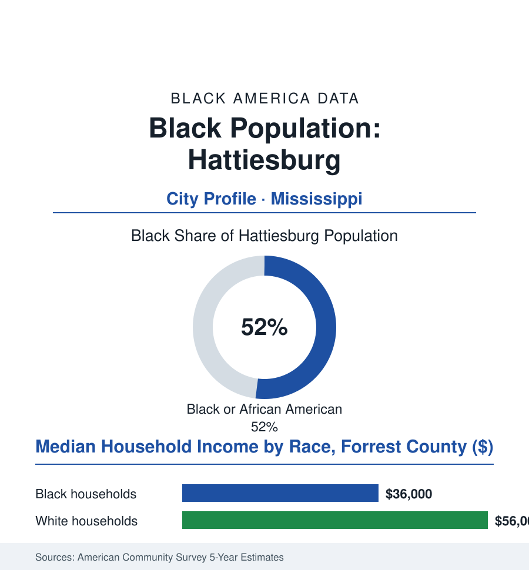

Black Cities
Black Hattiesburg: 18,000 People in the Hub City
Hattiesburg earned its Freedom Summer scars and its Hub City name in the same county — a Black community at the crossroads of Mississippi's timber, rail, and movement maps.

Hattiesburg's Black community numbers roughly 18,000 people — about 52% of the city's 35,000 residents, in the Pine Belt's Hub City where the timber roads and rail lines of south Mississippi cross. It is a small city with an outsized movement history — Freedom Summer's most tested ground — and a working present built on a university, a hospital, and a National Guard camp. This article reads Hattiesburg's numbers.
Timber, Rails, and the Movement's Proving Ground
The hub came from the pines: the longleaf timber boom and the rail junctions made Hattiesburg the Pine Belt's commercial capital, and its Black community grew with the sawmills and the rail yards — the Mobile Street district rising as its commercial and cultural row, the churches and Eureka High School as its institutions in the education file's Mississippi pattern. Then the county became, in the movement's internal geography, a place of consequence out of all proportion to its size: Forrest County's registrar, Theron Lynd, became the Justice Department's landmark test case — the first registrar sued under the new civil-rights statutes for refusing Black registrations — and Hattiesburg its proving ground (the Freedom Day pickets of 1964 bringing hundreds to the courthouse steps, the clergy delegations, the movement's patient arithmetic of applications refused and refiled — the county's Black registration moving from a few dozen souls toward the franchise, one documented refusal at a time, in the federal case files that taught the lawyers how the new laws would work). Vernon Dahmer — the NAACP leader, the grocery owner who paid his neighbors' poll taxes from his store — was killed by firebomb in 1966 in the county's Kelly Settlement, his name now on the courthouse-adjacent honors the city formally maintains; the trial record and the belated convictions of the 1990s close a chapter the city has chosen, in its recent official acts, to teach rather than bury. The movement generation's descendants hold the city's offices in the modern era — the mayor's office and the council Black-led across recent decades — administering the hub's second economy.
The Hub's Working Present
The institutional shelf tells the continuity in the congregations' and businesses' data: the Mobile Street churches whose basements were the movement's meeting rooms still anchoring the corridor's Sundays, the Black-owned firms of the district and the university area rebuilding a commercial row by the current decade's storefront census, the school file's two districts — city and county — carrying the desegregation era's layered geography in their enrollment maps. The Juneteenth and Freedom Summer commemorations fill the civic calendar alongside the university's homecomings, the town's past and its future scheduled, efficiently and without apology, into the same weekends.
That economy, in the current data, is the Pine Belt's service center: the University of Southern Mississippi (the city's largest knowledge employer, its Black enrollment a fifth and rising in the state data — the university the movement generation picketed now recruiting their grandchildren with scholarships named for the era), Forrest General Hospital anchoring the medical row, and Camp Shelby — among the largest National Guard training sites in the nation — pumping its mobilization cycles through the county's hotels and payrolls, the military file's economics at hometown scale. The ledger's other side is Mississippi's standard: a Black median household income in the mid-thirty-thousands in the survey data, poverty deep in the Mobile Street corridor's blocks, the timber's long decline still composing the county's base — against the stabilizers (the metro's modest growth in the census series, the downtown and Mobile Street revitalization plans, the university-medical complex's recession-resistant payrolls, the small Black professional class of a county seat thickening through the university's generations). The culture file keeps its entries: the city's blues and gospel traditions, the Dahmer legacy's formal commemoration, the Freedom Summer tours that now bring the students of other states to the courthouse steps — heritage as both duty and industry, in the Delta file's familiar double entry.
Reading Hattiesburg's Numbers
Eighteen thousand people, a majority of their hub city: Hattiesburg is the cities file's proof that the movement's map and the economy's map are the same map — the county that taught the Justice Department how to sue for the franchise now teaches its grandchildren in a university its pickets pried open. The census counts the hub. The courthouse steps remember why it matters.
More in Black Cities
Black Atlanta: Population, Distribution, and Growth of a Black Metropolis
Metro Atlanta holds more than two million Black residents — roughly one in three, second only to New York. The suburban distribution, migration history, and composition of Black Atlanta in the census data.
Black New York: The Largest Black Population in America
The New York metropolitan area holds about 3.4 million Black residents — more than any metro in the nation — and the city itself about two million. The census profile.
Black Washington: The District and the Metro
The Washington metro holds about 1.6 million Black residents, and the District itself — long a majority-Black city — now records a Black share near 41 percent. The census profile.
Source: U.S. Census Bureau, 2020 Census and American Community Survey 5-year estimates; City of Hattiesburg and Forrest County; University of Southern Mississippi archives.